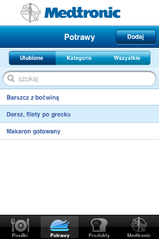
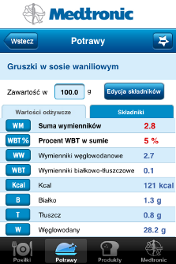
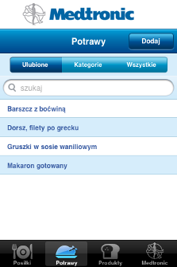

Aplikacja pozwala na zapisywanie konkretnych produktów, posiłków i potraw jako ulubionych.
Dzięki temu łatwiej i szybciej odnajdziesz wybrane produkty na specjalnych listach - ulubionych.

Dodawanie do ulubionych i usuwanie z ulubionych:
-
Należy wybrać dany produkt/potrawę/posiłek z listy, aby otworzyć ekran szczegółów.
-
Gwiazdka w prawy górnym rogu pozwala na dodanie elementu do ulubionych lub usunięcie z nich (o usuwaniu - poniżej). Jeśli gwiazka wygląda tak, jak na obrazku powyżej - po jej kliknięciu element zostanie dodany do ulubionych.
-
Do gwiazdki u góry dodany zostaje minus (ponowne jej naciśnięcie usuwa element z ulubionych).

-
Jeśli element jest dodany do ulubionych - znajduje się on na liście ulubionych.
